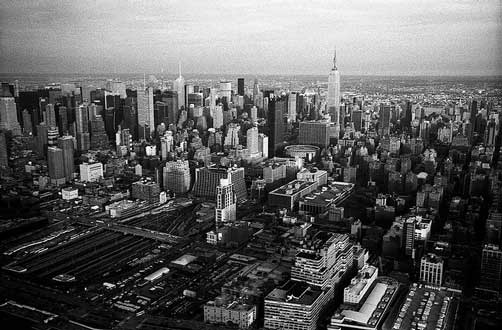
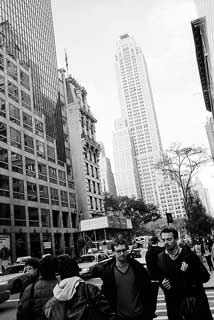

html5 3D画廊特效 Demo 1 Demo 2

Penn. Station, Madison Square Garden and Empire State Building
New York City, 2009, by Thomas Claveirole

American Museum of Natural History #1
New York City, 2009, by Thomas Claveirole

NYC Marathon in Harlem #4
New York City, 2009, by Thomas Claveirole

Cathedral Church of Saint John the Divine #3
New York City, 2009, by Thomas Claveirole

SoHo
New York City, 2009, by Thomas Claveirole
Manhattan Downtown/Wall St. Heliport
New York City, 2009, by Thomas Claveirole

Musée National du Moyen Âge
Paris, 2009, by Thomas Claveirole

Métro Jussieu
Paris, 2009, by Thomas Claveirole

Rose Main Reading Room, New York Public Library
New York City, 2009, by Thomas Claveirole

Midtown Manhattan
New York City, 2009, by Thomas Claveirole
更多网页特效，请访问网页特效库,欢迎加入网页特效库QQ交流群：258242983